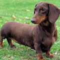

PetLovers
Menu
首页
论坛
百科

腊肠犬
拉丁学名：Dachshund
别名：腊肠, 獾狗, 猪獾犬
地区：德国
特征：整个身躯就像一条腊肠一样
简 介
腊肠犬（Dachshund）是一种短腿，长身的猎犬。其名源于德国，原意"獾狗"。此品种被发展为嗅猎，追踪，及捕杀獾类及其他穴居的动物．有意思的是，虽然"Dachshund"是一个德语单词，但是它在德国并不常用，德国人通常叫它Dackel或Teckel。原产于德国，现遍及各地。腊肠犬在所有狗种中是比较好养的。因为腊肠犬的天性独立自主，所以照顾起来很容易，主人下达的指令也都会迅速理解遵从。 发展历史 腊肠犬也称猪獾犬。是一种专门用作捕捉狭洞内野兽的猎犬。由于它四肢短小，整个身躯就像一条腊肠一样，故名腊肠犬。产于德国，1840年德国成立了第一个腊肠犬俱乐部。起初的腊肠犬是短毛型，后培育出长毛和刚毛品种。1850年腊肠犬被引入英国，本世纪初，英国人开始培育一种用作玩赏的迷你型腊肠犬，获得成功，并于1935年成立了小型腊肠犬俱乐部。 形态特征 头部狭长，如楔形的头骨令人影响深刻，头顶微微拱起。 双眼间的口鼻和头盖骨相接的凹陷部位十分突出。 耳朵长宽适度，根部接近后脑勺，前缘垂向脸颊，展现出美丽的弧度。 眼睛为微斜杏眼，颜色为暗色，表情丰富。 口鼻细长，鼻子又大又黑。下颚强而有力，双唇紧闭，牙曲呈剪状咬合。 前肢从前面看偏短，稍向内部倾斜。趾宽而有力，笔直朝外生长。脚上的肉垫很厚，指甲坚固呈暗色，大腿长度适当，小腿较短，与大腿形成直角。 后肢呈直立状，脚趾，肉垫或趾甲大致都和前肢相同。 尾巴健壮，有浓密的毛发，向尖端逐渐变细。尾巴末端又细又直，位在背部的延长线上，平坦的尾巴属于缺陷。 性格特征 性格相当活泼，开朗，勇敢，谨慎且自信。常做出滑稽的举动，是一种快乐的狗。易于训练，忠于主人但对外人充满戒心。在地面或地下工作时不屈不挠，所有的感官都非常发达。在户外，膳肠猎犬勇敢、精力充沛和不知疲倦；在室内，它慈爱而敏感，安静时友善、玩时需要欢闹，宣告陌生人时警惕。
宠物情缘XXXXXXXXXXXXXXXXXXXXXXXXXXXXXXXXXXXXXXX